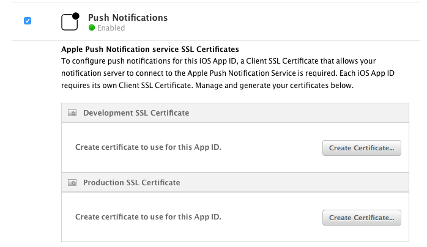
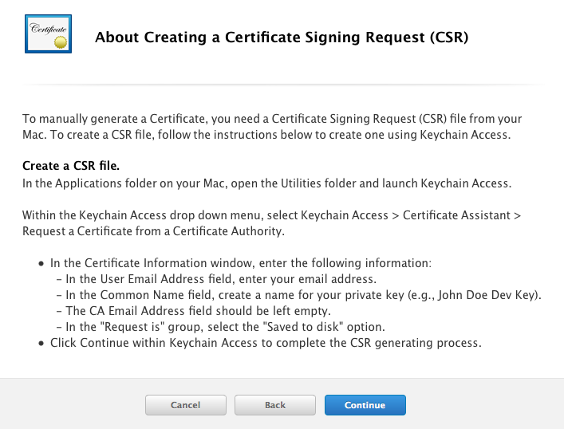
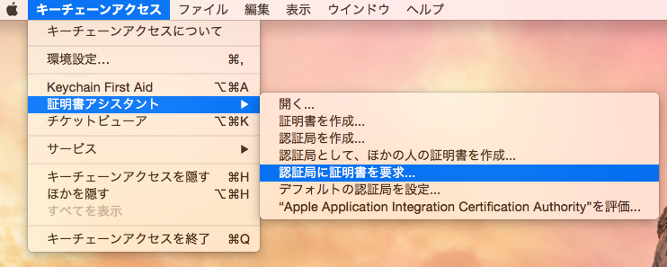
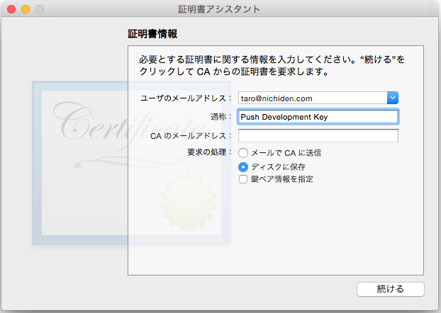
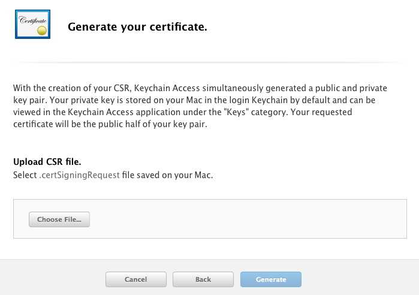
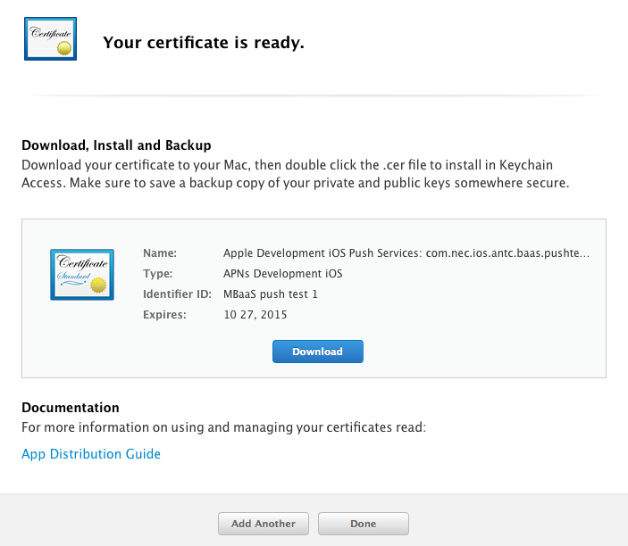
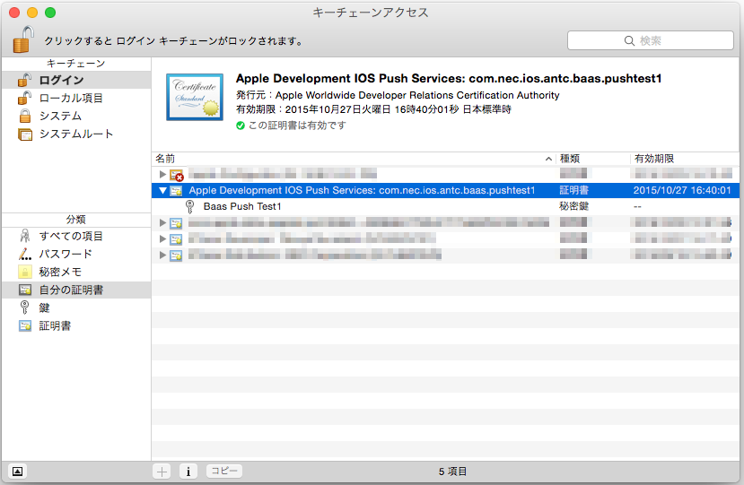
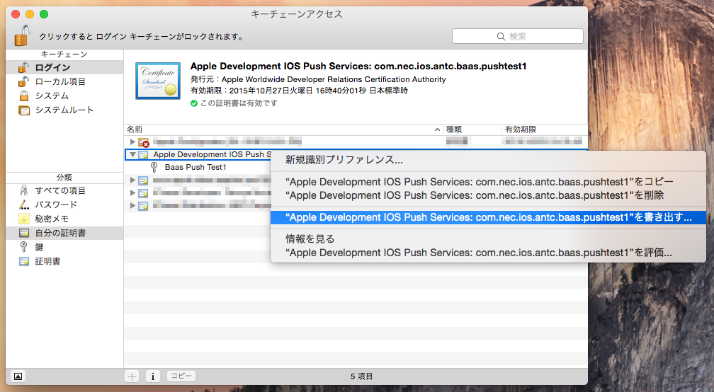
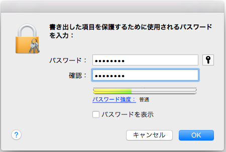

3.3.1. APNs証明書の取得手順¶
TLS認証を使用するには、最初に証明書を取得する必要があります。
App ID の登録¶
Apple Developer サイトにて、アプリケーション登録を行い App ID を取得します。
Apple Developer サイト → Certificates, Identifiers & Profiles → Identifiers → App IDs
Note: App ID は Wildcard にしないでください。
証明書の取得¶
App ID を取得できたら、次に Push 証明書を作成します。
CSR の作成¶
最初に CSR (Certificate Signing Request, 証明書署名要求) を作成します。
ブラウザから iOS Dev Center にアクセスし、該当 App ID を選択して Edit を押してください。 以下のように Push Notifications の設定が現れます。
{kind=link}
開発用と本番用の２種類の証明書を作成できます。いずれかの "Create Certificate..." を選択してください。
{kind=link}
上記画面の指示に従い、CSR を作成します。
Mac を起動し、「キーチェーンアクセス」アプリケーションを起動します。
{kind=link}
メニューの「キーチェーンアクセス」から「署名書アシスタント」→「照明曲に証明書を要求...」を選択します。
{kind=link}
メールアドレスと通称(CommonName)を入力します。 メールアドレスは申請者のメールアドレスを入力します。 通称は何を入れても構いませんが、わかりやすい名前にすることを推奨します。 CAのメールアドレスは空欄にしてください。
「ディスクに保存」を選択し、「続ける」をクリックして CSR ファイルを保存してください。
CSR ファイルのアップロードと証明書のダウンロード¶
{kind=link}
つづいて、iOS Dev Center の証明書作成画面に戻り、CSR ファイルをアップロードします。
{kind=link}
証明書の作成が完了すると上記の画面になります。Download をクリックして証明書をダウンロードし、 ダブルクリックすると「キーチェーンアクセス」アプリに自動的に証明書が取り込まれます。
PKCS#12 証明書のエクスポート¶
{kind=link}
キーチェーンアクセスの「自分の証明書」に、証明書が格納されていることを確認します。 本番用は "Apple Production IOS Push Services: ..."、開発用は "Apple Development IOS Push Services:..." という名前になっています。
{kind=link}
証明書を右クリックし「書き出す」をクリックし、個人情報交換 (.p12) ファイルを書き出します。
{kind=link}
.p12 ファイルを暗号化するため、パスワードを入力する必要があります。 このパスワードは、NEC BaaS サーバに証明書を登録する際に必要になります。